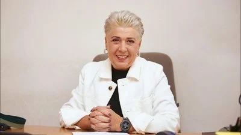

Вы всегда можете вернуться на эту страницу введя адрес http://www.ratzek
Подпишите ПЕТИЦИЮ в защиту Елены Калашниковой, без которой хижины Рацека возможно уже не было бы. Елена Анатольевна реально много всего делает для туризма в Кыргызстане.

Будем благодарны за частичную компенсацию расходов. Здесь описаны способы перевода донатов. В возможность появления здесь интернета было вложено порядка 350 человеко-часов работы и около 60.000 сом в ценах 2022-2023 годов. Ежемесячно сотовому оператору мы оплачиваем более 1000 сом.
Интернет предоставляется бесплатно. Чтобы его хватало всем, злостным потребителям мы ограничиваем скорость. Иначе говоря, если вы какой-то период времени слишком активно пользовались интернетом (просмотр видео, видео-звонки и т.д.), то ваш интернет станет медленным на несколько часов, чтобы остальные тоже могли воспользоваться сервисом.
А чтобы с этой страницей успели ознакомиться, мы добавили задержку входа.
В проекте принимали участие: